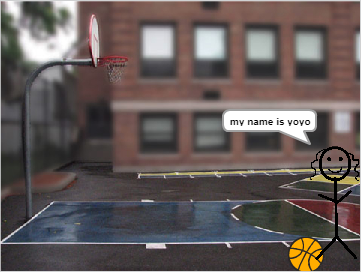

Projects & Coding Experience
Exploring the intersection of creativity and technology
Technical Skills
I've been exploring programming through various languages and platforms, from visual programming with Scratch to hardware programming with Arduino. Each language has taught me different ways to think about problem-solving and creativity.
Python Projects
Image Processing & Color Manipulation
One of my favorite Python projects involved creating custom image filters and color processing algorithms. This project taught me about digital image processing, color theory, and how to manipulate pixels programmatically.
Interactive Image Filter Demo

Click the buttons to see the transformation! This demonstrates color manipulation and filtering techniques I developed.
Interactive Story Game
I created an engaging text-based adventure game that allows players to make choices that affect the story's outcome. This project combined narrative design with programming logic and user interaction.

A screenshot from my interactive storytelling game, showcasing branching narratives and user choice mechanics.
Scratch Interactive Projects
Scratch was my introduction to programming concepts. These visual programming projects taught me about loops, conditionals, and interactive design.
Interactive About Me Project
My first major Scratch project was an interactive presentation about myself. This project taught me the basics of event-driven programming and user interface design.
Click the green flag to interact with my about me project!
Space Adventure Game
I created an engaging space-themed game where players control a spaceship using the spacebar and mouse. This project introduced me to game mechanics, collision detection, and user controls.
Game Controls: Hold spacebar and use mouse to control direction
Advanced Interactive Project
This project represents my growth in Scratch programming, featuring more complex interactions and creative storytelling elements.
Explore this interactive creation and see how my programming skills evolved!
Web Development

This Website
I used HTML and CSS to create this entire portfolio website. This project taught me about web design principles, responsive layout, and how to create an engaging user experience.
From the navigation system to the interactive galleries, every element was carefully crafted to showcase my work while providing an intuitive browsing experience.
Arduino & Hardware Programming
Moving beyond software, I've explored the world of physical computing and hardware programming.
Robot LED Light Show
I programmed an Arduino robot to create synchronized LED light shows. This project combined hardware control with creative programming, teaching me about:
- LED control and timing
- Hardware-software integration
- Pattern generation algorithms
- Real-time programming concepts
Musical Robot Performance
I created a robot that plays "You are my Sunshine" on a piezo buzzer while moving to the beat. This project involved:
- Audio generation with piezo buzzers
- Motor control and movement programming
- Synchronization between audio and movement
- Musical timing and rhythm programming
JavaScript & Interactive Web Features
JavaScript brings interactivity to web pages. Here are some examples of what I've implemented.
Dynamic Content & Real-time Updates
This portfolio includes several JavaScript features:
- Real-time clock display
- Interactive image galleries
- Smooth scrolling navigation
- Dynamic content filtering
- Responsive animations
My Approach to Learning
I believe in learning through doing. Each project I've created represents not just a technical achievement, but a journey of discovery and growth.
Creative Problem Solving
I approach programming as a creative medium, finding innovative solutions to challenges.
User-Centered Design
Every project considers the end user's experience and needs.
Continuous Learning
I'm always exploring new technologies and pushing my boundaries.